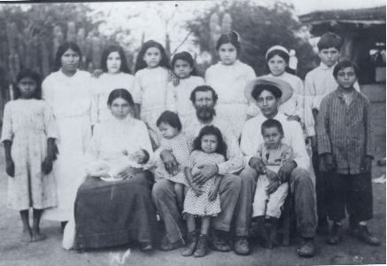
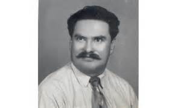
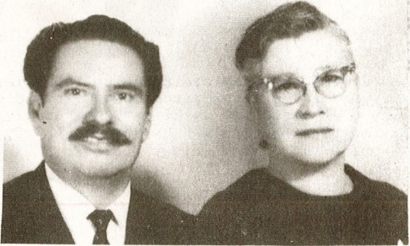
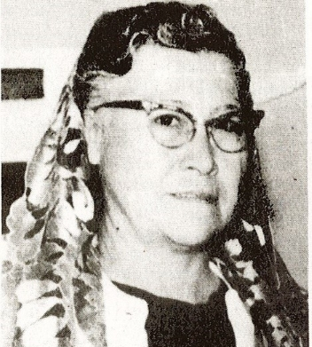
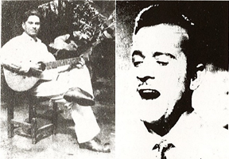
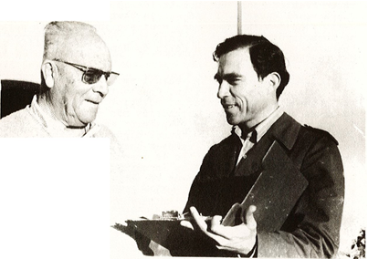
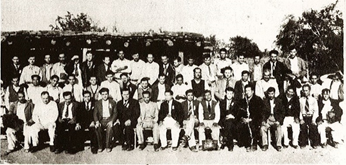
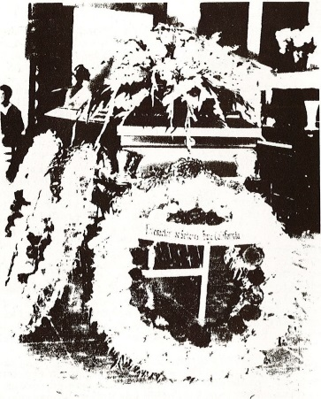
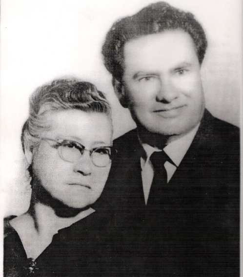

Chapter 1
Origin of the Gaxiola Surname
This surname is very common in the states of Sinaloa and Sonora but extremely rare in the rest of the country. There are many versions of how the first people bearing this name came to Mexico. Some claim the Gaxiolas are Jewish, others say French, and an overwhelming majority lean toward the belief that they descend from Spaniards.
Below we present two versions which, without any intention of stirring controversy, will help support those who maintain that the Gaxiolas came from Spain. We will call the first the official version and the second the family version.
Official Version
Juan Gaxiola was born in Spain and was the first ancestor of this lineage to arrive in Mexico, in the year 1752. He married Rita Bon, with whom he had, among others, a son: José Antonio, the first ancestor of this branch born on what is now Mexican soil. José Antonio Gaxiola Bon was born and died in the Villa de Sinaloa. He married Francisca Alcalde Espinoza, born in Sinaloa. They had 16 children: Celso, José Antonio, José Manuel, Rosario, Jesús María, Laura, Petronio, María de Jesús Amada, Cleotilde, Pedro, Adelaida, Rufino, Miguel, Dolores, and Refugio.
The Gaxiola lineage included figures such as:
Leandro Gaxiola — 1877–1917. Born in Villa de Seris, Sonora. Wells Fargo agent, alderman of the Hermosillo city council.
Macario Gaxiola — Military officer, born in Angostura, Sinaloa, who fought against Victoriano Huerta and served as chief of the first battalion of the Northwest Brigade commanded by Álvaro Obregón.
Manuel María Gaxiola — Lawyer. Born in Cosalá, Sinaloa. Justice of the state Supreme Court and one of the most influential figures of his time.
Family Version
No one in our family is better qualified to give us this information than my aunt Nicolasa, widow of Gaxiola. She was born in 1875 and, at 97 years of age, still retains a prodigious memory that rivals any computer. She was the first daughter of Don Miguel Gaxiola and his first wife, Cipriana. She is also the eldest sister of the departed figure of this story. We interviewed her in early 1971 at her daughter Mélida's home, and we came away in awe of the virtues so typical of the women of that era — virtues that are sadly disappearing. Speaking with her felt like listening to a lecture sprinkled with lessons in history, leadership, theology, and more.
Her family version of how her ancestors arrived in Mexico goes as follows: her grandfather was named Juan, who was in turn the son of Miguel. She remembers well that her grandfather Juan used to tell her that, during one conquest, four brothers came from Spain named Diego, Cayetano, Miguel, and Antonio. Once settled in Mexican territory, they scattered across the states of Sinaloa and Sonora. That, she said, is why our surname is so common in those states.
As we said at the outset, there is a great deal of speculation about the true origin of the surname, and this information is offered only for reference.
Chapter 2
Father of 41 Children
Maclovio Gaxiola's parents were Mr. Miguel Gaxiola Montoya, born in Santa Rosa, Sinaloa, in 1854, and Mrs. Cenobia López Armenta, born in Bacubiri, a town in the municipality of Sinaloa de Leyva.
Doña Cenobia was Don Miguel's third wife, whom he married in 1899. His first marriage was to a woman named Cipriana in 1874, and with her he fathered six children who survived to adulthood, while another five died at birth or in early infancy. The names of the first were: Nicolasa, Fulgencio, Crescencio, Getrudis, Cecilia, and Cipriana. When this last girl was born, Doña Cipriana died. From his second marriage, to Luz Álvarez, the same number of children were born, and, curiously, another five died under the same circumstances as in the previous marriage. The children of his second wife were named: Octaviano, Domingo, Rita, Micaela, Ramón, and Eliodoro. Sadly, Doña Luz could not survive a malignant tumor and also passed away, leaving Don Miguel a widower for the second time.
From his third and final marriage, to Doña Cenobia, 19 children were born, of whom 4 did not survive. The names of the children who reached adulthood were: Miguel, María, Micaela, Marciana, Manuel, Juanita, Cenobia, Melesio, Maclovio, Donaciano, Juan, Benito, Elicena, Eduardo Jesús, and Teresa. As you can see, Don Miguel was a most prolific father, and the total number of children he had across his three marriages was forty-one.

Don Miguel had to work hard so that his large family would have at least the essentials in food and clothing. Once a year he made a special trip to Culiacán, the state capital, located 105 kilometers south of Guamúchil. The round trip took 15 days by ox-drawn cart. His return to the ranch was cause for great joy among both the older and the younger children. He came home loaded with large quantities of denim, flannel, silk imported from China, and calico from India. Chocolates, cookies, and candies delighted the youngest children.
The few inhabitants of that era recognized Don Miguel as a man of authority in the town. Many of them came regularly to the ranch to seek his counsel and always received sound guidance for facing the moral and material problems of the time. He was quite skillful, hardworking, and provident. He possessed great vision and an amiable character, as well as a very sharp intelligence — gifts that his son Maclovio undoubtedly inherited.
Doña Cenobia was a quiet woman, hardworking, serious, and deeply devoted to her husband and children, which included those from her husband's earlier marriages, whom she cared for with the same passion and love. In her single years, and even after marrying, she was much sought after for her great talent for singing. Those who heard her sing said her voice was harmonious, sweet, and, above all, beautifully in tune. Nearly all her children inherited this gift from Doña Cenobia, but especially “the ugliest of her children,” which was the signature her son Maclovio used in every letter he wrote to his mother.
In his bachelor years, Don Miguel was a devout Catholic and religiously traveled to Guasave once a year to take part in the feast of the town's patron saint, the Virgin of the Rosary.
One day Miguel went to visit the Virgin on a date when there was no feast. He was greatly surprised, once inside the church, to see it in a state of complete abandonment. When he approached the altar, he was even more shocked to find the statue of the Virgin deteriorated and covered in dust, and, to his even greater disappointment, discovered that insects — crickets and others — had nested in the sculpture that not long before he had seen immaculate and imposing.
That scene made him reflect, and he concluded that if that image had no power to prevent its own decay, nor to keep those creatures from nesting in it, then it certainly had no power to save or heal him. It was there that the young Miguel lost his faith in the saints.
It seems his first contact with the evangelical church came through his son Fulgencio, who in 1908 became a member of the Methodist church in Cananea. When the son returned, he brought his father a Bible and other Protestant literature. The experience at Guasave and his son's visit led the town to recognize Don Miguel as an evangelical. Years later, he and his whole family converted to the Apostolic Church of the Faith in Christ Jesus. Within it he and his wife lived until both of their deaths — his in 1941 and hers in 1945. The remains of Mr. and Mrs. Gaxiola rest in the municipal cemetery of the city of Guamúchil.
Chapter 3
Born After the Iron Point Arrived
Before the conquest, the northwestern region of Sinaloa was populated mainly by Nahoa tribes. Peaceful people devoted to the salt and fish trade, they were the natives settled north of Culiacán. Very hospitable, they were always ready to welcome travelers passing through their territory. Their houses had no doors, and when they left them empty they simply laid a few branches across the entrance. To this day, people in those parts keep that good custom, which some historians — like Professor Carlos Esqueda of Guamúchil — believe is neither European nor Asian in origin, but Polynesian.
In the region described, 43 kilometers south of Guasave and 105 kilometers north of Culiacán, lies the city of Guamúchil. The town took its name from the tree of the same name, which was once abundant in the region. Now, with urbanization, it has nearly disappeared and is found more often in rural areas. The word Guamúchil means “sweet pod,” though in truth it is hard to find a fruit of this tree that lives up to its name — it tends to be bitter and astringent.
The town was split in two, first in 1908 by the Southern Pacific Railway, and later by the Mexico–Nogales highway. These mark two key, decisive eras in what is now one of the most promising agricultural zones in Mexico, in the already progressive state of Sinaloa.
Before 1908, its inhabitants were barely a handful, scattered along the banks of the Mocorito or Évora River. A small group had settled in what is known as San Pedro (on the other side of the tracks), while the rest lived in Old Guamúchil and Majoma. The town began to grow, and by 1908 “the Iron Point” had arrived — the name locals gave to the locomotive that laid the ties and tracks. Since they had never seen anything like it and did not even know what to call it, they named it that because the engine's bumper ended in a point and was made of iron. That same year the train station was built, and there began the town's first period of growth. By 1958, when the town turned fifty, it reported a population of 12,000.
The laying of the railway and the building of the station put Guamúchil on the tracks of growth, albeit at a slow pace. The paved highway, which also splits the town in two, became the route through which the region's great agricultural, livestock, and maritime wealth reached world markets — an even more decisive factor in the area's progress than the railroad. Fourteen years after its first fifty years of life, Guamúchil had already tripled its population.
The two bridges at the northern entrance to the city stand as silent witnesses to the town's progress. If, before crossing either of them coming from the north, one turns left and walks along the bed of what we know as the Évora River, a kilometer's walk brings you to the Gaxiola Ranch. Today, on the maps of the Agrarian Department, it is officially recognized as San Miguel, in memory of its illustrious founder. It was given that name through the efforts made in his lifetime by my uncle Maclovio, who was born on this very spot in 1913. His father claimed he was born on January 10th, at midnight but before twelve. His mother, on the other hand, said it was on the morning of January 11th. When it came time to register him, his father had the final word, and that is what counts.
He was born frail and premature. The first days of his life were uncertain. As he himself would write in his diary 56 years later: “from the moment I was born, I began to be a problem for my parents.” Struggle was a trait he carried from the moment of his birth, and it stayed with him every day of his life. At 7 years old, a mare's kick fractured his skull. His brothers made fun of him because he did not join in children's games, contenting himself instead with watching and studying their movements. They thought he was slow and nicknamed him “Burraco” (“little donkey”). What was really happening was that he was more advanced than his brothers, since their games were too childish for a thinker like him.
At fifteen he was gored by a bull, with such serious consequences that it took him 5 months to recover physically and emotionally. From then on he endured overturned vehicles, death threats for preaching the Gospel, train derailments, and forced landings. On July 17, 1960, in El Salvador, C.A., he underwent emergency surgery far from his homeland and family. He developed diabetes and fought off 4 heart attacks as best he could. He was born fighting, lived fighting, and died fighting.
He always felt special affection for his hometown, even though he lived barely a quarter of his life there. In June 1966, passing through his homeland, he founded a newspaper called El Heraldo del Valle, in which he placed great hopes. But having to leave again, he left the enterprise in other hands, and the newspaper stopped publishing. He had planned that once retired from his duties in the Church, he would settle permanently in Guamúchil to found a nursing home or an orphanage; proof of this is a property he donated at the San Miguel Ranch for that purpose. Thank God his greatest wish did come true: to die in the land that saw him born.
Chapter 4
When I'm Well, You'll Marry Me
From a very young age, my uncle Maclovio felt the desire to see other places. It was then that he developed a passion for travel that, years later, would lead him to see not only his own country but far beyond the borders of the Rio Grande and the Suchiate. He was a tireless traveler, and his feet walked through nearly every state of the neighboring country to the north, as well as every country in Latin America, including Cuba.
He was barely 15 years old when, together with his friends Enrique Díaz, Tomás Rochín, and another young man from Mocorito, he set off for an adventure in old Cajeme, today Ciudad Obregón, Sonora. There the four friends worked off some of their youthful energy in the cotton fields. The change of scenery and homesickness for his hometown stirred the flame of patriotism in the young adventurer, and upon returning home he enlisted, along with his brothers Miguel and Donaciano, in an Anti-Chinese Struggle Committee.
Since 1928, trade in the states of Sonora and Sinaloa had been monopolized by people who had come from distant China. The considerable profits they made were sent back to their home country, representing a substantial drain of currency from our nation. In response to the outcry of the few national merchants, the government authorized the residents of that region to expel the foreigners from Mexican soil without resorting to violence. Guamúchil, though a small town at the time, also suffered from the same problem. The few shops in what was then the commercial center, along Avenida Ferrocarril, were in foreign hands.
The Gaxiola brothers and other committee members held demonstrations through the streets of the town, inviting residents to join the struggle. On that occasion, my uncle Donaciano heard his brother Maclovio speak in public for the first time. He tells us that he did so with great ease and inspiration. When he spoke, he was transformed in such a way that the words and style did not seem to come from an inexperienced small-town boy, but rather from an accomplished master of oratory. There, in the warmth of love for his country and his town, one of the greatest preachers the Apostolic Church has ever had was born. His prodigious memory helped him retain dates, Bible verses, and the names of people and places with great ease. He had a great capacity for retention and very rarely used notes when preaching. His messages showed a deep knowledge of the Bible. He could speak pleasantly on subjects like Medicine, Law, Art, Grammar, History, and many other sciences, like a true expert in each field.
Let us return to the Anti-Chinese Campaign, during which a few more things happened. It is easy to understand that the three Gaxiola brothers got into some trouble during their foray into politics. All three were taken prisoner for having gone too far with their patriotic fervor. They were held for a few days in the Guamúchil jail and, before being transferred to Mocorito, the young patriot Maclovio was set free. The other two made the trip accompanied by their mother, who had to insist a great deal before the authorities allowed her to go with her sons.
They set out on the road, and before reaching a small settlement called Boca de Arroyo, the judicial police (known at the time as la Cordada) ordered the two prisoners to flee into the brush while they loaded their rifles. A mother's instinct warned my grandmother, and the men's plans went unfulfilled, because Doña Cenobia, realizing they intended to apply the feared Ley Fuga (the “law of flight,” used to justify extrajudicial killings), threw her arms around her sons. The men tried every way to separate her from them, but did not succeed. Since their efforts were fruitless, they continued on and, upon reaching Mocorito, had them locked up, releasing them three months later.
The expulsion of the Chinese merchants brought notable progress to the town, as the Gaxiola brothers could see for themselves once released from jail. In pursuit of their cherished ideals, they came close to losing their lives, and their freedom was curtailed for a time, but the sacrifice was worth it because their town prospered.
Once trade passed into the hands of Mexican nationals, Guamúchil began to grow, spreading impressively eastward along Rosales Street. Among the new merchants was Don Jesús González, father of the well-known Guamúchil businessman Gundérico González. Don Jesús's wife had a visiting niece staying with them who had come from El Dorado. On the same Rosales Street lived María, Maclovio Gaxiola's older sister, who was married to another man also named González. María enjoyed making friends with everyone and soon became friends with the young Micaela. When her brother Maclovio was gored by a bull and, on doctor's orders, had to stay in bed, María gladly took care of her young brother, tending to him at her own house on Rosales Street. Micaela wished to visit the patient, whom she met there. When the two greeted each other, he took her hands and told her, “when I'm well, you'll marry me,” and she took it half in jest and half seriously.
He was quite a catch, since many young women in town were drawn to his melodious voice. He was intelligent, affectionate, and wrote lovely verses. He could earn money easily and honestly. His brother Miguel had taught him to earn money making mirrors and repairing typewriters and firearms, among the many other skills his versatile brother had passed on to him.
The meeting of the two young people was love at first sight. She was a plump young woman with very fair skin. Her cheeks were so red they looked like a pair of apples. Her long, wavy hair, her pretty face, and her dreamy dark eyes were charms the young suitor could not resist. He, for his part, was 17 years old, slender and of average height. His eyes were brown, and the ever-present smile on his lips gave him an infectious air of confidence. Nor could she resist him, and after being sweethearts for a time, they soon married in the custom of that era.

His wife proved to be a wonderful companion who cared for him and their children with great devotion. She accompanied him on most of his travels, and during the last years of his long and painful illness, she was a devoted nurse to him, enduring sleepless nights and exhaustion without a single complaint, all to serve her husband. She cooked, washed clothes, and cared for the students when the Institute was founded in Mexico City. She served in the Women's Department in various positions at the national and district level. To this day she continues to serve as president of the Dorcas Women's Society of the Second Church of Mexico City.


From his marriage to Micaela Suárez, seven children were born, most of whom live in the nation's capital, except for the youngest daughter, who lives in Tijuana. Their names are: Luis Roberto, Eliseo, Eliú, Hogla, Rita, Rubén David, Orfa Lidia, and Maclovio.
Chapter 5
The Boy with the Little Guitar
Driven by curiosity to meet one of the first men to bring the Gospel to Sinaloa, we traveled to Bacobampo, Sonora. I was accompanied by brothers Jesús Arballo, Severiano Soltero, and Eduviges Cázares B. Once there, we looked for the pastor of the Apostolic Church, brother Elías Leyva. We found him at the town cemetery, burying a church member who had died the day before. That same brother, after the funeral, introduced us to Macario Martínez.
From the very moment I saw him, he struck me as a kind person, and moments after speaking with him I realized my impressions of his character were correct. I introduced myself as the son of Felipe and Marciana de Gaxiola. The man was moved to tears, for the years when he had been their pastor immediately came to mind, along with the way they had rejoiced and wept together in Verdura, some forty years before. I also found him to be a man of noble feelings, and that, together with his wife Mercedes, his life had had its highs and lows. I observed that, despite everything said about his controversial path, people kept on converting, for he still preached with the same passion he had shown in 1932, when he visited Guamúchil, El Salitre, La Unión, and other places. His pen also wrote history, his hands also sowed the seed, and his feet felt the stones of the road. His throat, as well as his stomach, often went unsatisfied, because the Gospel came before hunger, thirst, or exhaustion.
Once we had settled into the pastor's house at the church where he now serves, he began to speak and told us the following: In 1926 I was appointed at the convention in Indio, California, to come to Mexico as a missionary together with brothers Marcial de la Cruz and Isaías Ceceña. My companions stayed behind, and I made the trip. I arrived in Navojoa and then went on to Baromena, where brother Tiburcio Santos, who had arrived a few months before me, was preaching. I did not feel at ease in Baromena, since I wanted to preach in a place where people knew nothing yet of the Gospel. I agreed with brother Santos that I would go on to Flor de Canela.
Once settled in the new place, I began to hold services and invite people. I also visited La Pichiguila and Verdura. By 1929, people began to convert. There was a music band in Flor de Canela, and all its musicians were baptized. I began teaching them hymns, and since I had to sing loudly enough to be heard over the band, I once fainted from the effort. Within a few months we already had more than 70 brothers and sisters baptized in those places.
Brother Felipe Gaxiola B. and his wife invited me to come to Guamúchil to preach to their relatives. I gladly accepted. He lent me his horse, and together we rode to Guamúchil. The family lived on the ranch and was very large. One of the youngest boys, who always carried a little guitar, caught my attention. I always saw him together with another young man who was not part of the family and who, they told me, was named Pedro Infante. I saw them leave the house together and even had the chance to hear them sing as a duet. They were very popular and much sought after by the girls of the town, who would go to hear them serenade. When I invited the family to join me at a service in El Salitre, the boy with the little guitar was the first to accept, and he told me: “my name is Maclovio Gaxiola López, at your service.”

It was toward the end of 1932 when these things happened, and my time there passed quickly. Pedro Infante drifted out of sight, since young Maclovio no longer went around with him. Now he stayed close to me and accompanied me wherever I went; we were like Elijah and Elisha. He asked me many questions, showing a real interest in learning the things of God. He possessed an intelligence quite advanced for a boy his age. Not many days later, the young man asked me to baptize him. I did so, and he went down into the waters of baptism together with his brother Donaciano. I returned to Verdura, and they came looking for me there, and in a service near Bamoa he received the Gift of the Holy Spirit.
The young man overflowed with enthusiasm and wanted me to send him to a Bible college. He constantly asked me: when are you going to send me to college? I would answer: you are already in college, you'll learn more in practice than you would there. Since he was my companion in the work, whenever we went out to hold a service at the ranches he would ask me: what are we going to do there? how will the program go? I would answer, don't worry, the Holy Spirit will teach us what we need to do. Despite his mere 20 years, he possessed great vision, for together we planned to publish a magazine, as well as to compile hymns and put together a hymnal. He also dreamed of establishing a Bible college to train young ministers.
I remember well that, during a Holy Week service, I preached on the passage where Christ said: “I thirst.” The following Sunday, during the service, he asked to be allowed to sing a hymn; he stood up, finished tuning his little guitar, and began to sing: Thirst you had, my Lord, when hanging on a cross; that immense thirst for your love, which you bore to save us, oh Jesus! (177 of Consolación). I believe that was the first hymn he composed, and that is precisely where his career as a hymnist began.
When the time came to find someone to take charge of the brothers and sisters in Guamúchil and El Salitre, I did not hesitate to bring him into the ministry and appoint him to oversee the work in those places, for he was always very active and aimed for great things. He achieved every goal he set for himself, because he was equipped with the great vision that, as I have said, I admired in him from the moment he was baptized. I sensed that Maclovio Gaxiola L. would become a great instrument in the Lord's work, and I am glad indeed that this came to pass.

Chapter 6
The Romantic Conventions of the Ranch
The author's parents were the first members of the Gaxiola family to convert to the Apostolic Church, in 1932, while they were living temporarily in Verdura, Sinaloa. They were baptized by brother Tiburcio Santos, and the pastor of the church was Macario Martínez.
My mother, immediately after her conversion, began corresponding with her family to spread the faith, and shortly after, my father brought pastor Martínez to Guamúchil, where the family welcomed the preacher with open arms, and from the very moment he arrived he began preaching to them. Once the minister got to know the Gaxiolas, he realized their souls were as fertile as the land they lived on, and he sowed in them the seed of the Gospel. Needing helpers to assist him in preaching, he realized that if he taught Don Miguel's young sons the doctrine, they would soon convert to the cause he proclaimed. He discovered they were fine musicians and outstanding singers, and they also seemed intelligent. The young men, for their part, felt drawn to the minister from the moment they met him, attracted by his fiery way of preaching. They accompanied him to the different places where they held services. At a Christmas service held in La Unión, when the pastor gave the altar call, young Maclovio felt the desire to be baptized. Macario and my father returned to Verdura after that very fruitful visit.
A few days later, Macario returned from Verdura, this time accompanied by my mother, and they continued preaching to them. Soon God's message received its answer, and my uncle Maclovio and his brother Donaciano were baptized on December 31, 1932, at six in the morning. The waters of the Évora River were cold, but that did not matter as long as their sins were forgiven. The awkward hour was because the young men only made up their minds right before Martínez and my mother were to return to Verdura on the Iron Point train, which left that day at 7 in the morning.
That same day he was baptized, our departed and illustrious personage began, so to speak, his ministry, for together with his brother Donaciano, he went to another neighboring ranch and held a service on his own, led by our distinguished figure. In the days that followed, they went around visiting the places Martínez had visited, holding services of the same kind. They went to Verdura and, at a service near Bamoa, the novice aspiring minister received the Gift of the Holy Spirit five days after his water baptism, that is, on January 5, 1933.
Brother Macario, seeing the need for a companion in the ministry, returned once more to the ranch, where they held services every night, and there he proceeded to induct him into the ministry on April 1, 1933. He also received from Martínez the appointment as overseer of the work in Guamúchil and the surrounding area. With renewed drive, the new minister set out to preach not only on the ranch but in all the neighboring towns as well. In El Salitre he baptized his first convert, a woman named Margarita, widow of Tapia.
By day he worked the ranch's fields, and by night he preached, almost always until very late. On one occasion, returning together with other brothers from a service in El Salitre, overcome by sleep as they walked, he took hold of the arm of one of his companions and walked nearly 4 kilometers while asleep. When this happened, the brothers agreed that he should no longer work on the ranch, and they helped him so that from then on he could devote his time solely to the work of God.
Among the people he baptized in Guamúchil during that time was a woman named María who lived on Independencia Street. Her husband, named Román, was deeply angered and swore to kill the young pastor. He found out Maclovio would be traveling toward El Salitre and, hiding under the shadows of a dark night, took cover among some trees and waited for him along the road, armed with a rifle. But God's intervention, along with Don Román's nervousness and the darkness of the night, kept him from carrying out his ill intentions. As the group drew near, a shot suddenly rang out, and turning toward the trees, they found a man bleeding from his hand and moaning in pain. When they went to help him, he confessed that as he tried to position himself to shoot, the rifle had inexplicably gone off by itself. Poor Don Román's hand withered, and my uncle went on baptizing people.
The church kept growing, and together with his brothers Donaciano, Melesio, and Miguel, and also brothers Sabas and Filiberto López, he traveled everywhere carrying the Good News, and the Lord manifested Himself among them through healings and miracles. When they visited a place called El Palmar de los Sepúlveda, there was a sister who had already spent three days in bed. When her daughter told her the brothers were arriving, she leapt from her bed, completely restored to health, made them a meal, and put them up for the night.

The first convention of the Apostolic Church in the district of Sinaloa was held at Flor de Canela in 1935. From then on, the rest have been held in Guamúchil, with two exceptions. This writer holds fond memories of these gatherings since 1940, when he was a small boy. At these gatherings there were four main things: prayer, music, food, and people.
We walked among a sea of people who knelt in prayer and spoke in other tongues. It was a real via crucis to make one's way through that human river, fervently prostrate, crying out to God. They paid no mind to the taunts of many onlookers, nor to the stones some threw at them. The musical instruments numbered in the dozens. At service time it sounded as though a full orchestra were playing. Musicians from other places joined the Gaxiola brothers' orchestra, such as the Ávalos brothers from Nayarit and brother Palemón Bojórquez, who played a tiny flute that, being a stout man, was almost invisible in his hands. Meals were served free of charge. My brother Manuel once gathered up the chickens set to be slaughtered and counted 267. There were no tables large enough to seat so many guests, so people improvised, using crates, tree trunks, stones, and bricks to devour the delicious stew plates they were served. It was not unusual to see well-known people from Guamúchil mixed in among the brethren, such as Don Patricio Macon, Poncho Díaz, Lupita Villaverde, and others, who happily helped out and took part in the festivities. The demand for tortillas was so great that my uncle Miguel, noticing the cooks could not keep up, invested in a tortilla-making machine that, although it made them square, no one minded, since it was the flavor that counted. Near the auditorium, about 300 meters away, was the river. The soft sand served as a cool, cushioned bed.
On one occasion, at the end of one of those romantic conventions, a group of ministers went to a barber shop, among them brother Nachito Mariscal. While there, they remarked on how tired the celebration had left them. Some said their arms ached, others their whole bodies. Then brother Nachito spoke up, while he was being shaved, and said he too had struggled a great deal putting on his shoes when he got up, because his feet were swollen and would not fit. At that, everyone's eyes turned to the brother's feet, and they discovered the real reason he had trouble putting on his shoes: he had put them on backwards, since it had been very dark when he got up.
Chapter 7
Don't Falter, Brother Celestino
Education in the years from 1913 to 1932 was a privilege enjoyed by only a few. Don Miguel Gaxiola's children would have liked to study, but it was not possible, since there was nowhere to do so in Guamúchil, and besides, supporting a family as large as his required the help of his children. Thanks to this, the granary was always stocked with plenty of corn, wheat, beans, rice, and other grains. The cattle had green pastures to graze. The fertile land always received the proper care that translated into rich harvests.
Our subject would have loved to attend school. His exceptional intelligence allowed him to make his way in life quite successfully, becoming a consummate self-taught man. He himself learned to read and write correctly without ever setting foot in a classroom, not even for a single day. Perhaps that is why he always cared so much about education. He pushed for every church and every minister to raise their level of education. He organized many Bible Institutes in the various districts of the Work in Mexico and abroad, and he was always present to lead them and to contribute as a teacher in some subject.
In Guamúchil, a technical secondary school called “Colegio Insurgentes” has operated since 1967. Its director is brother Celestino Martínez de la Rosa, who in his bachelor years served as president of the National Confederation of Youth of the Apostolic Church. The school he directs employs teachers who graduated from the Higher Normal School, which in itself guarantees a degree of teaching excellence.
Thanks to the drive of its young director, the school has just built its own building in the southern part of the city. Among the standards the institution pursues is one aimed at instilling a clean moral life in its students. To this day that goal has been achieved, thanks to teachers who also teach by example. Anyone might feel satisfied with having accomplished this much, but not brother Celestino. “My dream,” he told me one day, “is for the children of our church's brothers and sisters to attend this school; we can already receive them as boarders if they come from other places. I also intend to establish a school of trades and arts for ministers in the new building, and to offer a ministerial course at the same time.”
To establish this Cultural Center, our interviewee had to overcome a series of difficulties that at times made him falter, to the point of nearly abandoning the endeavor. But let us allow him to narrate the rest of the chapter in his own words.
“I take this opportunity, offered to me by my good friend and brother in Christ, J. Felipe Gaxiola, to mention the timely help that our departed and illustrious brother Maclovio Gaxiola L. provided in what we have accomplished to this day — a man always distinguished by his clear and well-defined vision in educational matters. He was a man of great ideals and aspirations, of whom many great truths have been said. He himself, as Presiding Bishop, personally spoke with Tito Uriarte, then Bishop of the Sinaloa district, so that he would authorize the local church to lend us its Sunday school rooms, which served as our classrooms for four years. We will always be grateful to the Guamúchil church for this favor. I also want it known that the subject of this book was a member of our Sinaloa Cultural Association, A.C., the organization within which our school was born. He was always willing to lend us a helping hand in every way.
We cannot deny that education was one of his main concerns; that has been demonstrated by the institutions of that kind he founded within the Church. The Christian community remembers him as one of its foremost idealists. Starting in the school's second year, for lack of a trained director and because of our precarious financial situation, we began having problems. I told brother Gaxiola of my decision to give up the effort. I immediately received from him the moral support I so badly needed, in these words, which I have kept engraved in my memory ever since: ‘You are certainly not the only one interested in this school; don't falter, brother Celestino, we must carry on firmly with our purpose.’
From then on, I personally took charge of the School's direction, a task and commitment that has kept me bound to a noble cause: education. But I take satisfaction in serving, in however small a part, my community, my country, and my Church.”
Chapter 8
Poems, Even on Paper Napkins
We regret that most of his compositions were written while traveling, and he gave them away to whoever asked for them. We saw him writing his poems even on paper napkins, whether in the homes of the brethren or in restaurants. When inspiration struck, he wrote on whatever was at hand. His poems number in the hundreds and reveal a great poetic sensitivity that many found reminiscent of the great Nayarit-born bard, Amado Nervo.
Judge for yourselves this small selection of poems we managed to compile:
In Memoriam
Mother, waking this morning,
I wished to go and greet you as before;
But I did not find you in your humble bed,
I looked for you in the hut where you lived,
And I wondered, and I asked myself: what did you leave me?
Or did you go to live somewhere else?
Then they told me that your world
Is not this world of misery and weeping,
And gazing at the dawn I thought of you,
Loving you again so deeply,
And I came looking for you at the graveyard.I did not find you there, but a headstone
Keeps the inscription to your memory.
Was it true, little mother, that you left?
But you have not died, for you live on
In history, and in the souls
Of those you loved.
I found no flowers to honor you that day, so a bouquet
I formed from my own words,
And I lay it at the foot of your grave,
Saying still I love you so, my mother.
Another poem dedicated to his mother, composed on May 10, 1964, in Guamúchil, Sin.
Remembering My Mother
Like a shooting star that travels on,
Sparkling, radiant, and full of grace;
So were you, my loving mother,
And I can call you dearly beloved!Crossing the sky of my childhood,
You lit it up completely;
That is why I liken you to a shining star,
Though now a great distance separates us.
Your radiant brightness, oh beloved mother!
Remained forever in my sight;
I could not erase you from my mind,
And I hope to see your dawn again.For now I no longer see you in the sky,
For black mourning crepe has covered your splendor;
My poor heart is filled with grief,
But to see you again is my longing.The black night of your absence will pass,
And you will rise again, beloved mother!
If not here, then in the new life,
But I shall rejoice in your presence.
The following poem he composed after returning to normal life following emergency surgery on July 17, 1966, in the city of San Salvador, C.A.
Everything Dies, Lord
The light of day dies when evening comes,
Though the sun may seem an invincible star,
It dims among the shadows, hides like a coward
That flees and at last dies in the terrible night.
Yet the night itself dies when dawn arrives,
Its fearsome shadows torn apart by the day
That shines resplendent, growing hour by hour,
Until by evening the somber night returns.The green plant dies that in the flowering field
Spreads its perfumes and pleasant scents,
And in the beautiful fields full of color
Their withered flowers come to stand for death.
The proud poplar dies, the elm, and the pine
That seemed eternal, majestic, invincible;
All the forests die, for such is the destiny
Of everything that is born, felt, or seen.The strong animal dies, though it may multiply
And leave offspring worthy to represent it;
This mystery lingers, though someone may explain it,
Puzzling mankind and burdening the mind.
Why is life this way? Fleeting illusion!
Why does nothing last? Why is nothing made eternal?
Why is there nothing that lives, and lives, and never dies?
Why does everything turn to dust and ashes?If the struggle between death and life is constant,
Then there is clearly reason to believe and hope
That one day the struggle, so often lost,
With the passing of the years we shall win:
And then, without fear, free at last from death,
From pain and sorrow we shall live,
In a perfect world, happy, whole, and strong,
We shall be eternal, never ceasing to exist.
Written while passing through Oaxaca, in the temple of the Apostolic Church of that city, on May 25, 1970.
House of God
With great zeal and rightful claim
Your presence filled your house,
Jesus Christ, Redeemer;
The Jews had turned it
Into a mere den, a common house,
Ignoring its true worth.Your sanctuary, profaned,
Served them as a marketplace,
Oh Lord,
With doves and cattle
They had filled it all,
Merchants without fear,When you arrived, oh Christ,
And in your hands a whip – it was a terror!
In a single day it was done,
You used your voice and the rod
To restore its honor.“My house shall be called a house of prayer”
Was the most thunderous phrase
That ever shook mankind;
You, as God and as Judge, cast out
The unfaithful and the merchant from your house.Today your house, holy and humble,
Is filled with believers,
Oh my God,
Keeping even the smallest mark
Of your law and your truth,
Which is your voice.
On December 31, 1969, in Guamúchil, he dedicated the following poem to the year that was ending.
A Year's End
It went, it went swift and fleeting,
As though driven by the wind,
1969, Year of our Lord,
Now a fragment of history.
So passes the life of man,
Like a shadow or a mist that appears –
Though it be a great mystery of this world,
Life is, and then it disappears.What did you leave in my life, old year?
What do you bring me in your days, new year?
If I took to heart, in living, some great counsel;
Endless opportunities, of course.
To live within conscience is no deception,
Though the days pass without ceasing,
For we learn from life how fleeting it is,
And experience leads us to reflect.If life always passes this way
To teach us to seek out what is real,
I can say that I have already understood,
Having found the truth in this world.
That truth is that finding eternity
Is a longing the soul feels without ceasing,
And only in Christ shall we find the goodness
That grants us rest forevermore.Let time pass and life be spent –
Nothing matters anymore for one who is in Christ!
For to live for Him is great fortune,
And to die in his faith will be joy.
To be faithful to the end in this life
Is the constant striving of the Christian,
Who looks with hope toward his departure,
Whether today, late, or soon.
This composition (along with the present book) will be sent to the mother of the former candidate for the presidency of the United States of America, who tragically fell, struck down by the bullets fired by a madman.
To Robert Kennedy
Robert Kennedy; you were brave
In seeking to govern your nation;
Your person was most compelling,
For reason always guided you.
Yet not all good men
Are able to fulfill their longings,
Because there are outside interests
Inspired only by evil.Triumphant through the sure vote
Of your people, who understood
That your ambition was never for money;
Five bullets brought you down.
Yet still, the brightness of your life
Will go on lighting the path
That your homeland, so dearly loved,
Will watch like a brilliant star.Your homeland, an example to the world
Of progress and a haven of peace,
But now, keeping vigil over you in a temple,
Shame clothed your face like a mask.
Violence, hatred, and vengeance
Humbled and debased your nation;
But now hope rises up,
Which will unite your people with passion.If it was not you who would govern,
Because your life was thus cut short,
The ideal that nested in your soul
Will live on in your beloved homeland.
It is not the strength of carnal man
That brings triumph in the struggle,
But the firm moral example
Of one who gives his whole life.Champion of the cause of the poor!
Champion of noble youth!
That is what will make your cause prevail
And see unity come to fullness.
Another brave soul will raise your banner
And be able to plant it on the summit,
For so your people demand it;
And peace and harmony will come.
Chapter 9
The Central American Convention and More Poems
Another poem, composed in Managua, Nicaragua, on November 30, 1969.
Central American Convention
Central American Missionary Convention,
Held now in Managua,
First of its kind,
Hosted here in Nicaragua,
From the 26th of November
To the 30th of the same month,
We trust that within you will be sown
The truth, with earnest care.The character of this gathering,
Special and most fruitful,
We hope that gatherings like it
Will multiply throughout the world.On this occasion without equal,
The theme was: Education,
And to the Sunday school
Direction was given.Distinguished speakers
Followed one another, joyful,
With fundamentalist ideas
They filled the auditorium;As was only to be expected,
The first to speak
Was brother Maclovio,
Who was the first to take the floor.Brother Castorena,
As he is called here,
Did his part very well
With what he had to say.
He showed how the in-between years,
Youth and adolescence,
Can become the means
To becoming a good believer.The secretary of missions,
Leocadio Jiménez López,
Presented good reasons
For rising above mediocrity.
He spoke to us of the teaching
That ought to be given,
Which sustains our hope
And teaches us how to live.Brother Quintín, too,
With enthusiasm and courage,
Prepared us for the good,
For a life of love.
He explained how a child
Can grow and grow,
Developing affection
Until arriving at belief.The good-natured Gerardo,
Who out of good will
Came to admire that bard
Born in this land,
Contributed with wisdom,
Gathering it all in outline,
He spoke of art and of science,
And this brought great joy.The other delegates
Who came from elsewhere
Were very glad
And also contributed;
They preached their sermons
In the services that were held,
Filling the hearts
Of all who attended.Julio César, overflowing
With enthusiasm and resolve,
With love and with loyalty;
To further the cause
Of the Lord's Church,
Sending a student
To the Higher School,The national ministers
And the Central Americans
Set forth their ideals
For being good brethren;
Each one contributed
Their most brilliant idea,
And so it was all agreed
To carry on ahead.Brother Valentín,
Dean of the missionaries,
Was the first at the feast
With his sincere efforts.
The host president,
Antero Moya, and his board
Presided over this convention,
Leading it from the head.
The following acrostic, dedicated to his wife. (In the Spanish original, the first letters of each line spell out her full name, Micaela Suárez de Gaxiola.)
To My Wife
A wall of silver, burnished with gold,
A blessed ideal — that is what you are, woman,
The cadence of notes with a soft sound,
Eager for rhythm — such is your being.
The shining star that watches over my sleep,
The star that lights my sky at night,
That is how I see you, for I am yours.If you only thought of what you are,
A single moment could suffice
To know that among women you were
The reason for my life, my noble ideal.
You are, of fruits and of beautiful flowers,
The nectar that gives my life its flavor.What surprises you — my humble prose?
It is only that I love you so much that my soul rejoices.Glorious is your life! Happy is mine!
So I feel it, seeing your innocence:
Xóchitl, noble queen of a fierce and noble people,
Immense in beauty like the noble flower,
Oh, the loveliest among women!
The one who won my faithful heart,
To whom I give it, second only to my God.To my wife, with all my affection,
I compose this acrostic in all humility;
To remind her that in my childlike soul
Sincerity reigns forever.
His wife did not want to be outdone, and she composed this acrostic for him. (In the Spanish original, the first letters of each line spell out his full name, Maclovio Gaxiola López.)
To My Husband, Maclovio Gaxiola López
My devotion to you is very great,
Love of my life, only at your side am I happy;
Like an oak I see you walk, strong and sure;
Other men seek the vain, but you seek the eternal;
At times you forget you are human, living among the clouds;
You watch life pass with something like indifference;
Unforgettable is the treasure you carry, though others may not believe it;
Mysterious eyes envy your joy.Thank you, Lord, because in spite of everything he is wonderful;
Love alone is what you try to bring to the world;
A friend to strangers and to all, you have offered everyone your hand;
Immense happiness you have given to my life;
The waves that engulf your life, you will overcome them;
I see it, and can hardly believe you are so strong;
At times I stop to think what would become of me without you.The wonders you see encourage you to keep going,
Forgetting the dangers that sometimes lie in wait for you,
Thinking only of how beautiful it will be to arrive,
Hoping and trusting in the promises of the Lord,
Green grass, threaded with silver, now crowns your temples.
The Hymn That Made Him Immortal
He was a prolific author of both the words and music of a great many hymns found in the hymnals Suprema Alabanza and Consolación. For lack of space, we present here only the hymn that reflects his autobiography. We may think of it as a summary of what his life was.
I Will Go If He Goes With Me
In this world I live only for Christ;
At Calvary, with His blood, He bought me.
With the blood from His side I am washed,
And for this I live only for Him.Chorus
Along the lonely, sorrowful road
I will follow you, Jesus.
Trusting that your hand
Will always guide me in your light,
Even on the heavy slope
That you climbed bearing your cross.
In the bitterest struggles
I will hope in you, Jesus.I ask you to keep me ever faithful,
To have mercy on me, even in my wrongdoing;
To wash my heart, more and more,
Remember that for me you drank gall.If you always guide me, I will follow you,
Even should my stubborn foot begin to bleed;
With your heavy cross I shall arrive
At Calvary, where I will weep for joy.
“Even on the heavy slope…”
The words contained in this hymn of praise were the author's own experience, lived while he wearily climbed the Sierra Madre to carry the Gospel to a place called Baromena. He composed this immortal hymn in 1933, just a few months after his baptism.
“Remember that for me you drank gall…”
The great physical effort the climb demanded cried out for a single drop of water to refresh his parched throat, but since no one could give him any, he found comfort in thinking that Christ had endured a still crueler punishment, drinking bitter gall.
“Even should my stubborn foot begin to bleed…”
The soles of his shoes wore through from the constant friction against the ground. A small stone worked its way into his shoe and caused a minor wound that bled.
Chapter 10
I Will Write Because I Sense That Many Things Will Happen
The title of this chapter is taken from words written in one of the six diaries he kept during the last 5 years of his life. In all, they amounted to 2,190 pages, written in his own hand, summarizing the events of each day. They are highly valuable documents in which he recounts, with great drama, his struggle against illness, the difficulties he had with certain ministers who did not understand him, and many other very interesting matters.
In 1966 he began writing his first diary, and in the introduction he writes:
I will keep a diary through 1966, God helping me, because I sense that many things will happen. Perhaps some good and historic things worth recording. Other things will be shameful, but they too will be truths for history.
I myself am uncertain about my life. I feel strange things in my body, vague thoughts cross my mind. Perhaps I am going through an important historical transition. Important things will happen in Mexico and in the United States regarding the elections of the new governing boards. Here and there unexpected incidents may occur. I will go on describing them as they happen, God helping me. The strong will become weak. Some of the weak will grow stronger. And perhaps some of us will cease to be, or to be active. God knows what will happen in these 365 days, but I will do my best to describe it day by day. For now, 1965 is coming to a close; it is 10:30 at night as I am given the floor. I will preach the last sermon of 1965.
Testament to the Ministers
Last night, December 31, 1968, I was at the temple of the First Church of Tijuana until the year ended and we welcomed this new one. We gave thanks to God for what we were able to accomplish during 1968, and we asked for daily guidance and help to continue in the Christian life.
This is the fifth book I am trying to fill day by day. In 1966 I wrote a complete diary and left it with Dina Gaxiola de López; in 1967 I wrote another complete diary and left it in the hands of Hermila Armenta; and in 1968, being the Olympic year, I wrote 2 diaries: one in a planner, which I left with Rosalba, and another which I left in the hands of Orpha Lidia Gaxiola de Meza. This present one, if God allows me to fill it, should remain in the hands of my wife, and if any of my diaries should prove to be of historical interest, my wife may gather up the diaries I have mentioned. Should my wife or I pass away, this diary may pass into the hands of Hogla Rita Gaxiola de Rodríguez, with the same rights as my wife regarding the gathering of the previous ones, should it be necessary and appropriate. As I have spent my life in the service of the Apostolic Church of the Faith in Christ Jesus, any historian authorized by the Church may consult these diaries and take from them whatever information is considered necessary to complement the History of the Work of Christ in our country and in the other places we have helped with the Apostolic Message.
Out of modesty, and so as not to diminish the dignity of the Work of Christ, I do not record many important things I have witnessed, or that God accomplished through my humble instrumentality. Nor have I written of my weaknesses and failings, nor of the faults of others. These things are in God's hands. He will judge them.
My 36 years of service in the ministry have given me many experiences, and I can also say that I have had to face very difficult problems that seemed insurmountable, but I overcame them and moved forward. Now I can say that I did not live in vain, and if my work has not been valued by many, there are more who have appreciated, encouraged, and recognized me. For this reason I have survived every hardship.
God knows what I have been, what I am, and what I will be. That is why I do not fear. When someone believes I have acted wrongly, and I am satisfied that I did the best I could, I remain at peace, because I believe in the Omniscience of God. He knows all things, and I have served Him, or at least have wanted to serve Him, all my life. In the eyes of some, perhaps I have not been a good Christian, but I am certain that, despite my limitations, imperfections, and failings, I have served God faithfully.
Chapter 11
Vision of His Own Burial
In Fresnillo, Zacatecas, he had a vision of his own burial when another heart attack struck him — one of the five he suffered.
This is what I seemed to hear at my own burial, which came so close to taking place.
Funeral oration for my burial: Here lies in silence one who caused unease. One whose constant drive for self-improvement unsettled many who, seeing his ambitious plans of action, felt distrust and disquiet. His great spirit, which drove him with such force, has now left him in peace, and with it the uncertainty has ended. For many times he challenged the ministers, inviting them to act, and there were those who thought his hopes illusory, who later saw them crystallize into latent realities. Such was his life, and for many his work was fruitful, and perhaps for those who doubted his sincerity, today is the opportunity to vindicate him and to judge him now with less severity. May his body, which we still see, rest in peace, for his spirit will go on working for all eternity.

Today many brothers and sisters came to visit me. A delegation of the Confederation of Women from each federation was present and gave me a series of small gifts. Around $3,000.00, three thousand pesos in cash and a few other little things. How much it encouraged me! Today I appeared at the convention and declared it opened with a brief address. How moving my presence was, and how the people wept to see me! Thus began the XXVII Convention. Thanks be to God.
Torreón, Coahuila, October 15, 1970.
Today I woke with a new outlook on life. The sun shone less brightly. The day was sad. The future is somewhat uncertain. Will I regain enough health and strength? Only You, oh God, who gives life to the dead, know. So I left Gómez Palacio, Durango, and we traveled on to Salinas, S.L.P. We arrived at the Motel Capri. There we rested after 9:00, having left Gómez Palacio at 17:00, quite exhausted. First day free of even a defined task. Thank you, my Lord!
Salinas, S.L.P., October 22, 1970
Whoever reads this book will notice how my life evolved over the year. Several times I came close to dying, as can be seen in the handwriting itself, in its fluency or its clumsiness. I am satisfied to have attended the Convention, even half-alive. I did not do it to display courage or to prove my manhood, but to show that, above myself, I love God and His Work. I ask forgiveness of those I offended with my resolute attitude. That was my feeling then, and it still is. God, I love you!
Mexico City, November 10, 1970
Today I celebrate the 38th anniversary of my conversion to Christ. Over this span unfolded the whole drama of my life, with its triumphs and defeats, its ups and downs. From the time I was about to turn 20, in the springtime of my youth, to today, when I approach 58, in my autumn years. Within this span of 38 years I began and, as far as can be counted, finished my ministerial career. Today I hold no fixed position, just as I held none then. My life, once full of youth, now contrasts with the old age that keeps me nearly immobile. And yet, again I say: thank God. Merry Christmas, merry Christmas, merry Christmas.
December 24, 1970, Guamúchil, Sinaloa
Today it has been 58 years since I arrived in this dreadful world, which, after coming to know it, I love, and grew fond of, despite the setbacks and disappointments life gave me in my first 20 years. Afterward I found a new way of living, which I lived with such passion that 38 years slipped away so quickly that, now that I return to reality, I feel I was only just beginning to live when my human strength ran out, and the only thing that remains strong is the spirit. The flesh has aged, my body has no strength left, but I praise life and want to live it eternally. Help me, Lord!
January 10, 1971
Another year of my earthly existence has passed. Whether my life was fruitful or barren, it already was what it was. Now I will receive praise from some, reproach from others, for as long as I continue living on this earth, until the true Judge and Lord of all gives the reward or punishment my work has deserved before Him. I did everything good with the greatest longing; but many things may have gone wrong for me. God will judge them with His divine justice. This I believe, this I hope, and in this I trust, at peace. Thank you, Lord, for giving me that assurance in you.
Guamúchil, Sinaloa, January 11, 1971
Posthumous page written in his own diary by Gerardo Gaxiola S.
Your hand could write no more, for the specter of death cut the thread of your existence. He lived until 12:45 p.m. A new heart attack took your life. Here your Work ends, here your light, which shone so brightly, goes out.
You have left a luminous mark on your passage through this world. We will never forget your example. You will live forever in our hearts.
The Man Who Left Us a Luminous Mark
Contribution by Gerardo Gaxiola S.
Memory is glorious when one can live in such a way as to become identified with some virtue. What have we left the world to remember us by once we are gone? The most exalted monument we can erect to our memory is a life of service to others. It will outlast even the loftiest monuments, which in the end turn to dust.
In trying to write the portrait of a life that was short but shone so brightly, my language proves poor and insufficient. Nevertheless, wishing to contribute to brother J. Felipe Gaxiola's project of publishing a biographical book about our distinguished preacher, great leader, fine teacher, and incomparable friend, the Reverend Maclovio Gaxiola López, I offer my humble contribution.
Personally, I wished I had been the one to do what brother Felipe Gaxiola, in good time, felt moved to undertake. I am all the more pleased that he began this work, with his ability and his better vision of these matters.
In 1947, when I was a child, I began, so to speak, to get to know our distinguished brother Maclovio. He visited us then at the church in La Palma, Sinaloa, accompanied by some brothers studying at the International Apostolic Technological Institute in Mexico City. Among them was brother Raúl López Mendoza, and I was struck by how they would approach brother Maclovio with difficult questions, whether on eschatology, grammar, or some other subject, and he would answer with such skill that he left his questioners fully satisfied. Even at my young age I noticed that he possessed an outstanding wisdom. That was my first impression of him.
Later I discovered that many brothers, whenever they spoke of brother Maclovio, had words of praise, and all agreed that there was something different about him. In my adolescence and youth I heard him preach and take part in our district conventions, and I noticed that his involvement always made an impact. He greatly enjoyed visiting our churches in Sinaloa, and in every one of them he left behind some useful teaching. The brothers and sisters felt renewed by his counsel and satisfied by his teachings.
When I held in my hands the book “La Historia de la Iglesia Apostólica” (The History of the Apostolic Church), which he wrote, I realized the great responsibilities he had gladly carried out, and that even when circumstances were adverse, he went wherever he was sent. I felt the desire to be a little closer to him and to know him better. I prayed to God, asking Him to grant me the privilege of traveling in his company and learning some of the many things he knew that might serve me in the future.
It was my privilege to travel in his company for the first time while he was President of the Church, along with other brothers from the Governing Board, in October 1968, to attend the 44th General Conference of the United Pentecostal Church in Atlantic City, N.J. For three weeks we traveled together, covering 22 states of the American Union, and I enjoyed driving the car we made the trip in, because he would sit in the seat beside me, and we covered many hundreds of miles without noticing, because his conversation was so very interesting to me. That trip was a marathon of endurance, given the urgency of the schedule and the responsibility that bound him to the Work; in three weeks we had to make the return from so long a journey, and for him it meant driving through entire nights along the highways of the United States. What surprised me was brother Gaxiola's incredible stamina and good will — by then he was quite ill, and yet we never once heard him complain. Our brief stay among the brothers of the United Pentecostal Church was beneficial from many points of view, especially because the bonds of fellowship between the two organizations were drawn closer.
Of everything, one thing from this historic trip stayed etched in my memory: after many days and nights of travel, we arrived in the city of El Paso, Texas, utterly exhausted, and our traveling companions looked for a bed to rest in, since there was practically nothing else to be done. Our brother, however, changed his clothes and said to me: “Let's go to the service in Ciudad Juárez, the brothers are waiting for us.” I thought of refusing to go with him, overcome as I was by sleep and fatigue, but seeing him ready, with that tremendous force of will that always characterized him, I got up and went along. When we arrived at the First Church of Ciudad Juárez, the temple was full; its pastor, brother Manuel Esquivel Fonseca, had spread the word, and the people were waiting for the Presiding Bishop. I noticed the joy on people's faces as they saw brother Maclovio walk in. I then thought that, had he not come, we would have let the brothers down, and he was always careful never to do that. So, defying the circumstances, risking his own health, and rising above the situation, he kept a commitment made beforehand. After the service, which ran until ten at night, some brothers approached him for counsel, and, with a smile, he attended to every one of them and left them satisfied. What force of will! What love for the Work! What extraordinary endurance! He did not count his own life precious to himself when it came to attending to the affairs of the Church and helping others.
A new heart attack struck him, and, nearly lifeless, he made his way to Guamúchil, Sinaloa, the city that had seen him born twice, and which he loved so much. He arrived in the second half of December 1970 and remained there, practically immobile, until the day of his passing. In his final days we had the privilege of seeing him: calm, writing, speaking of his hope for the Church's triumph, making plans, wishing he could work — but his heart could beat no more, and his life came to an end at 12 o'clock noon on January 12, 1971.
Thus we saw him depart, leaving us an unforgettable memory, a luminous mark, an example worthy of imitation. We have placed a monument over his grave with the following epitaph:
He left us an inheritance. The most precious treasure: the hope of being united with Him in heaven. The memory of his counsel, the image of his virtues, and the example of his fruitful life on earth.
Chapter 12
Curriculum Vitae
Maclovio Gaxiola López was the ninth child of Miguel Gaxiola Montoya and Cenobia López Armenta, born in Guamúchil, Sinaloa, Mexico, on January 10, 1913.
He never attended school, but his exceptional intelligence allowed him to teach himself to read and write. He seized every opportunity that came his way to build a fairly advanced education. He drew the whole wellspring of his knowledge from books, the Bible being the chief one that enriched his spirit, soul, and body. Life was his school, and in it he gained a wealth of knowledge that made him a true teacher. He stood out as a great orator, an accomplished poet, a prolific writer, a brilliant musician, a recognized singer, an evangelical pastor, a dean of missionaries, and more. Above all, he possessed great moral qualities that made him one of the most sought-after counselors of his time.
He was baptized in the Apostolic Church of the Faith in Christ Jesus on December 31, 1932, in Guamúchil, Sinaloa. In Bamoa, Sinaloa, he received the Gift of the Holy Spirit on January 5, 1933. In his own native land he was inducted into the ministry on April 1, 1933. In the city of Torreón, Coahuila, he was ordained as a minister on December 31, 1934, with ministers Felipe Rivas H., José Ortega A., and Aurelio Rodríguez taking part in the ceremony. His first pastorate was at the church in Guamúchil, Sinaloa, from 1933 to 1939. During that time, besides the church in his hometown, he founded the churches of Angostura and Constancia, and in 1940 he founded the church in Mazatlán, in the same state of Sinaloa.
He was the first Bishop of the Pacific Coast starting in 1940 and, during his tenure, strengthened the churches of Tepic, Nayarit, and Guadalajara, Jalisco. He later moved to Mexico City, where he exerted a dominant influence in advancing the Work of God in the Federal District and in the Isthmus and Southeast regions.
He founded and served as rector of the International Apostolic Theological Institute. He lent his own house so the school could operate there when it began, on April 7, 1946, in Mexico City. He initiated the missionary Work abroad and was the first missionary the Apostolic Church sent to Central and South America.
It fell to him to found the Church's official magazine: El Exégeta. He was also the Church's first Vice President.
He served twice as President of the Church: the first term from 1958 to 1962, and the second from 1966 to 1970.
He wrote several books, among which we may mention: La Historia de la Iglesia (The History of the Church), Teología Moral (Moral Theology), and a booklet on this last subject.
He composed numerous poems, and wrote and arranged many hymns. He compiled hymns, combined them with his own, and put together the hymnal Suprema Alabanza y Consolación.
He took part in drafting the Church's first Constitution and had it printed.
He also held the positions of Bishop of the Central District, Bishop of the Baja California District, Secretary of Missions, and General Treasurer.
A heart attack took his life on January 12, 1971, in his native land, just as he was preparing to take up his responsibility as Bishop of the Central District.
He is survived by his wife, Micaela Suárez, widow of Gaxiola, whom he married in 1930, and by the seven children the Lord gave them.
The Apostolic Church was enriched and blessed by his fruitful ministry, which he carried out for 38 consecutive years and nine months, from the time he was inducted into the ministry.
